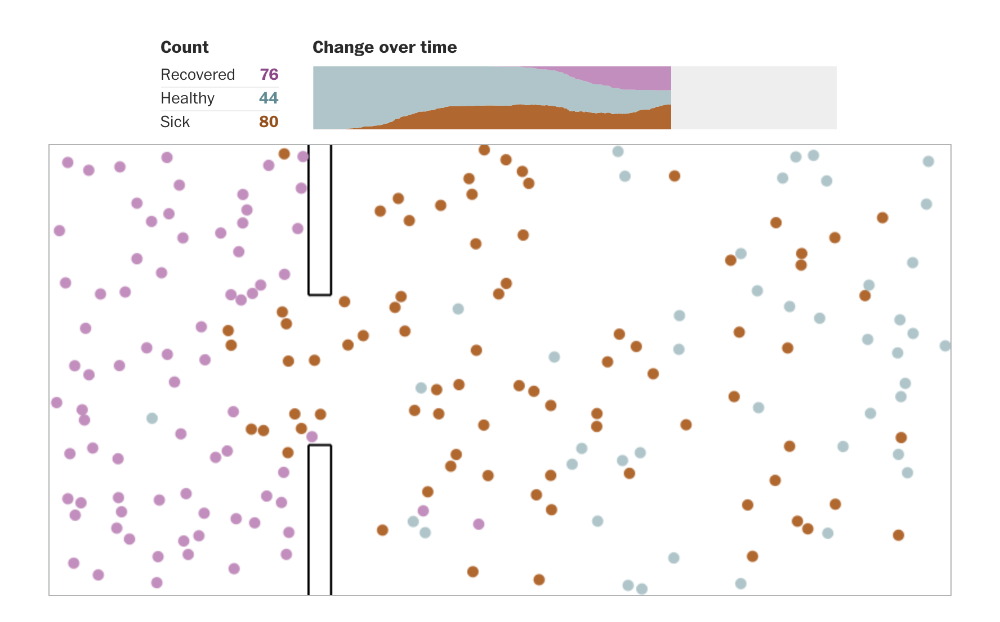

Using conservative estimates from real data, Sal from Kahn Academy explains how one can estimate the actual number of Covid19 cases.
Grant from 3Blue1Brown
A lesson on exponential and logarithmic growth. Uses ideas from Calculus II (derivatives, concavity). I cannot think of a better way to motivate the important of calculus than to see it at work to help humanity understand a pandemic.
Washington Post Article

Aricle: click here.
This wonderful article shows with animated simulations how diseases spread. Amazing! The above image is a screenshot of one of the simulations.